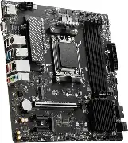
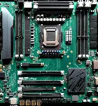

📟 Motherboard - The Main Circuit Board
The motherboard is the backbone of your computer. It connects all components together, allowing them to communicate with each other. The motherboard determines which CPU, RAM, storage, and expansion cards you can use.
Key features include the CPU socket (determines CPU compatibility), chipset (controls features and connectivity), RAM slots (for memory modules), PCIe slots (for GPUs and other cards), and M.2/SATA ports (for storage).
Mini-ITX
Size: 170mm × 170mm - Small form factor
Mini-ITX is the smallest desktop motherboard form factor. It's designed for compact builds where space is limited. Despite its size, it can still accommodate powerful components in a tiny footprint.
.webp)
| Form Factor | Mini-ITX |
|---|---|
| Size | 170mm × 170mm |
| RAM Slots | 2 (max 64GB) |
| PCIe Slots | 1 (usually) |
| Typical Use | SFF builds, HTPC, portable systems |
| Advantages | Very compact, space-efficient |
| Limitations | Limited expansion, fewer features |
Micro-ATX
Size: 244mm × 244mm - Balanced size
Micro-ATX offers a great balance between size and features. It's the most popular motherboard size for budget and mid-range builds, offering good expansion options in a compact package.

| Form Factor | Micro-ATX |
|---|---|
| Size | 244mm × 244mm |
| RAM Slots | 4 (max 128GB) |
| PCIe Slots | 3-4 |
| Typical Use | Gaming PCs, office systems |
| Advantages | Good value, decent expansion |
| Limitations | Less features than ATX |
ATX
Size: 305mm × 244mm - Full-size standard
ATX is the standard motherboard size for most desktop computers. It offers the best balance of features, expansion options, and compatibility, making it the go-to choice for gamers and enthusiasts.
.webp) /span>
/span>| Form Factor | ATX |
|---|---|
| Size | 305mm × 244mm |
| RAM Slots | 4 (max 192GB+) |
| PCIe Slots | 6-7 |
| Typical Use | Gaming PCs, workstations |
| Advantages | Great features, excellent expansion |
| Limitations | Requires ATX case |
E-ATX
Size: 305mm × 330mm+ - Extended size
E-ATX (Extended ATX) is the largest consumer motherboard size. It offers maximum features, expansion, and cooling options. These boards are designed for extreme overclocking, multi-GPU setups, and professional workstations.

| Form Factor | E-ATX |
|---|---|
| Size | 305mm × 330mm+ |
| RAM Slots | 8 (max 256GB+) |
| PCIe Slots | 7-8 |
| Typical Use | High-end builds, workstations |
| Advantages | Maximum features, extreme performance |
| Limitations | Very expensive, requires large case |